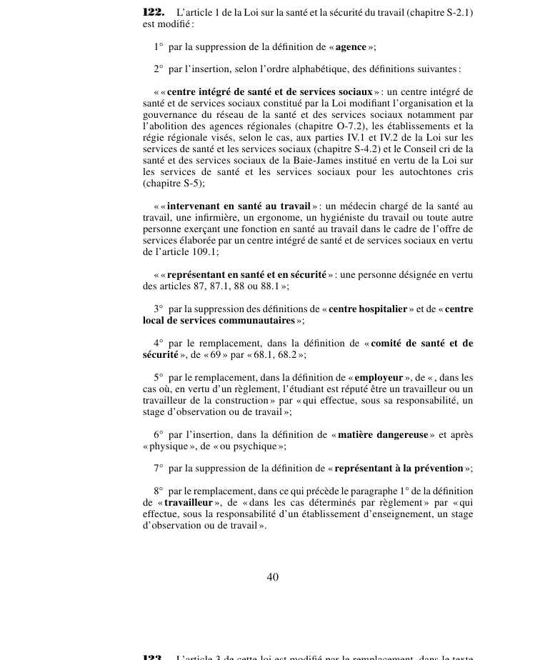

art-122-LMRSST : refonte des définitions de l'art. 1 LSST
Refond le vocabulaire de art. 1 LSST en huit paragraphes : quatre définitions disparaissent, trois apparaissent, quatre sont réécrites. C'est le socle terminologique de tout le régime réformé.
- Définitions supprimées (par. 1°, 3° et 7°) : « agence », « centre hospitalier », « centre local de services communautaires » et « représentant à la prévention ».
- Définitions ajoutées par ordre alphabétique (par. 2°) : « centre intégré de santé et de services sociaux », « intervenant en santé au travail » (médecin, infirmière, ergonome, hygiéniste du travail ou autre personne oeuvrant dans l'offre de services d'un CISSS) et « représentant en santé et en sécurité » (personne désignée en vertu des articles 87, 87.1, 88 ou 88.1).
- « Comité de santé et de sécurité » (par. 4°) : le renvoi à l'article 69 est remplacé par un renvoi aux articles 68.1 et 68.2.
- « Matière dangereuse » (par. 6°) : les mots « ou psychique » sont insérés après « physique », étendant la notion à l'atteinte psychique.
- « Employeur » (par. 5°) et « travailleur » (par. 8°) : la mention de l'étudiant réputé travailleur par règlement cède la place à la personne qui effectue un stage d'observation ou de travail, sous la responsabilité de l'employeur ou d'un établissement d'enseignement.
📄 PDF officiel (page 40) · 🌐 LegisQuébec
Texte officiel
L’article 1 de la Loi sur la santé et la sécurité du travail (chapitre S-2.1) est modifié :
1° par la suppression de la définition de « agence »;
2° par l’insertion, selon l’ordre alphabétique, des définitions suivantes :
« « centre intégré de santé et de services sociaux » : un centre intégré de santé et de services sociaux constitué par la Loi modifiant l’organisation et la gouvernance du réseau de la santé et des services sociaux notamment par l’abolition des agences régionales (chapitre O-7.2), les établissements et la régie régionale visés, selon le cas, aux parties IV.1 et IV.2 de la Loi sur les services de santé et les services sociaux (chapitre S-4.2) et le Conseil cri de la santé et des services sociaux de la Baie-James institué en vertu de la Loi sur les services de santé et les services sociaux pour les autochtones cris (chapitre S-5);
« « intervenant en santé au travail » : un médecin chargé de la santé au travail, une infirmière, un ergonome, un hygiéniste du travail ou toute autre personne exerçant une fonction en santé au travail dans le cadre de l’offre de services élaborée par un centre intégré de santé et de services sociaux en vertu de l’article 109.1;
« « représentant en santé et en sécurité » : une personne désignée en vertu des articles 87, 87.1, 88 ou 88.1 »;
3° par la suppression des définitions de « centre hospitalier » et de « centre local de services communautaires »;
4° par le remplacement, dans la définition de « comité de santé et de sécurité », de « 69 » par « 68.1, 68.2 »;
5° par le remplacement, dans la définition de « employeur », de « , dans les cas où, en vertu d’un règlement, l’étudiant est réputé être un travailleur ou un travailleur de la construction » par « qui effectue, sous sa responsabilité, un stage d’observation ou de travail »;
6° par l’insertion, dans la définition de « matière dangereuse » et après « physique », de « ou psychique »;
7° par la suppression de la définition de « représentant à la prévention »;
8° par le remplacement, dans ce qui précède le paragraphe 1° de la définition de « travailleur », de « dans les cas déterminés par règlement » par « qui effectue, sous la responsabilité d’un établissement d’enseignement, un stage d’observation ou de travail ».
Texte de l’article 122 LMRSST, extrait de la couche texte du PDF officiel (page 40), sans OCR ni retouche. La capture ci-dessous et le PDF font foi.
{kind=link}

Toucher l'image pour l'agrandir🔗 Ouvrir a cette page : LMRSST.pdf : page 40
- Huit modifications au même article : suppressions (par. 1°, 3°, 7°), insertions (par. 2°, 6°) et remplacements (par. 4°, 5°, 8°).
- Le « représentant à la prévention » est remplacé par le « représentant en santé et en sécurité », changement de dénomination qui se répercute dans toute la LSST.
Portée et effet
Adopté dans le cadre de la réforme de 2021 modernisant le régime de santé et de sécurité du travail, l'article 122 de la LMRSST réécrit les définitions de art. 1 LSST. Le texte en vigueur de la disposition visée intègre désormais cette modification ; le libellé exact figure dans la capture officielle ci-dessus. Le chapitre II de la LMRSST modernise la LSST : mécanismes de prévention et de participation des travailleurs, régime intérimaire et rôles des intervenants en santé et sécurité.
La jurisprudence porte sur la disposition modifiée, art. 1 LSST, et non sur l'article modificateur lui-même (les décisions et leurs PDF sont rassemblés sur la page de cet article).
Voir aussi
- 🎯 Article modifié : art. 1 LSST · définitions des termes clés de la LSST.
- 🔗 Désignation du représentant en santé et en sécurité : art. 87 LSST, art. 88 LSST
- 🔗 Ancienne référence au comité : art. 69 LSST
- 🗓️ Entrée en vigueur : 1er octobre 2025 (régime permanent : art. 313 ¶7, Décret 1154-2025) (voir art. 313 LMRSST)
- 📚 Chapitre : Chap. II : modifications à la LSST
- ↑ Loi : LMRSST
Pages qui pointent ici (3)
- art-1-LSST : définitions générales de la loi Recueil législatif
- LMRSST Recueil législatif
- LMRSST : Chapitre II : Modifications à la LSST Recueil législatif